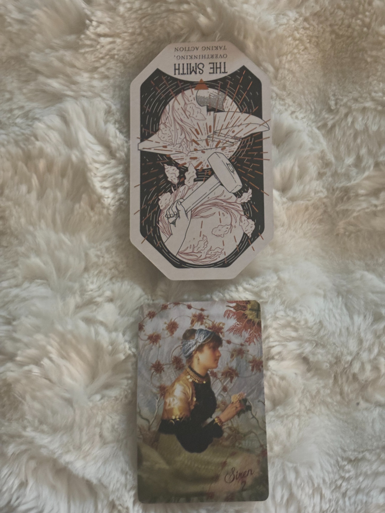
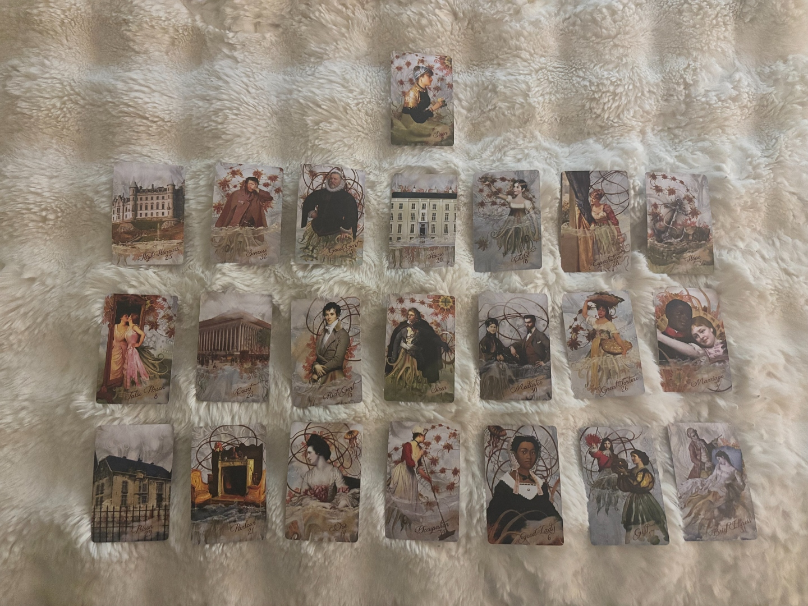
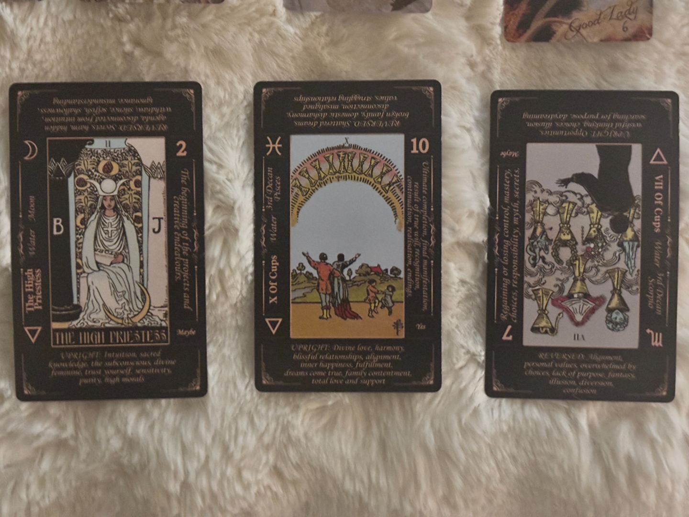

The Citadel Oracle
Spiritual Crown · Soul-Level Atmosphere

The Smith — Reversed
From the Academy suit: Overthinking, Taking Action
Picture it: the inside of a forge at night. Coal glow. The smell of hot metal. A hammer coming down on iron, again and again, sparks flying in every direction. There is something almost meditative about the rhythm of the Smith's work — and something very disciplined about it too. The Smith doesn't just swing wildly. They heat the metal, they watch it, they wait for exactly the right moment. And then they strike.
Upright, this card is about finally acting on something you've been overthinking. But yours came in reversed, Tiffany.
And reversed, The Smith says something different. Something more uncomfortable. It says: you rushed in. The iron wasn't ready. The plan wasn't formed. You struck before you knew what you were making — and now you're living with the shape that came out.
That is the spiritual atmosphere of this reading. Not a punishment. Not a judgment. A clear-eyed assessment: something in your current situation is the result of a move made too quickly, without enough preparation. The consequences of that aren't external forces happening to you — they are the aftershocks of a choice. And The Smith reversed, sitting above everything else in this portrait, is asking you to be honest about that.
The forge is still lit. The metal can be worked again. This card is not telling you that you're stuck with what you made. It's telling you that the next step requires something different: slow down, own what happened, and this time, think before you strike.
That accountability is not a punishment. It is the path forward.
The Kipper Mystic Sevens
Your Life Portrait · People & Events
A Quick Note on How This Spread Works
The Mystic Sevens is a 21-card Kipper spread built on a counting method: after your significator is removed from the deck, the cards are shuffled and then counted off in groups of seven. The 7th card of each group gets placed in the next position. This means the cards aren't just drawn randomly — they're selected by the structure of the deck itself after the shuffle.
The result is a 3-row, 7-column grid. Cards are laid right to left within each row, from top to bottom. There are two phases: the overview read, then the pairs phase, where cards from opposite ends of the layout are mirrored back to each other. In Kipper, directionality matters — who a figure is facing tells part of the story.
Your Grid

The Core Theme of the Reading
Cards 4, 11, 18 (top to bottom): House · Siren 1 · Occupation
This is the spine. The heart of what the cards are saying about your life right now.
Read top to bottom: House — a significant male figure — Occupation.
The house comes first. Not a home necessarily — though it can be — but a structure. A dwelling. A situation with four walls around it. Something that houses the situation. This card in Kipper is a stop card, which means it's not flowing somewhere — it's landed. It's fixed. Whatever this structure is, it is currently a stable, present, defined reality in your life.
Below it: a significant male figure. Someone specific — a man who has relevance to both the house above him and the occupation below him. He sits directly between your home situation and your work situation. He is not peripheral to either.
Below him: Occupation. Your work, your role, your daily function in the world. This is another stop card — meaning your work situation is also defined, present, and landed. It is what it is right now.
The central column narrative reads: a defined home situation and a defined work situation are both shaped by — and connected to — a significant male presence in the middle of your life. These are not separate stories. They are the same story, told in three floors.
The Three Rows
Row 1 — What You're Consciously Thinking About
Reading right to left as a story: Hope feeds Expectation, which surrounds a new beginning or child energy, which lives inside or alongside the House, which is held or connected to a mature male figure (Good Gent), which sits alongside Sorrows — and all of it is reaching toward High Honours on the far left.
This row is your conscious landscape — what's on your mind, what you're actively thinking about. You are hoping and waiting around something new and tender, in the context of a stable home situation that also involves a mature male, and that whole experience is touched by genuine sadness — but the reach of everything in this row is toward achievement, recognition, and a genuine turn for the better.
You're holding a lot in your head simultaneously. The hope and the sorrow are not separate threads. They're twined. And they're both pointing somewhere better.
Row 2 — The Current Situation in Full
This is the most active row. This is what's actually happening.
Start right to left: Marriage (a commitment, contract, or significant bond — formal or otherwise) flows into Great Fortune (the best card in this deck — success, wishes granted, deep positive transformation) and then into Mediator (a negotiating energy, someone or something that bridges), and lands on Siren 1 (a significant male at the center of the current situation). To his left: Rich Gent (a younger or ambitious male figure — career, finance, or someone with drive), then Court (a legal, formal, or official process — advisors, systems, institutions), and at the far left end: False Person.
False Person in Kipper is not primarily a person card. It's a distress signal — something is not right. It's the Mayday card. Something about the current situation has an element of hidden adversity, something concealed, or something that isn't what it appears to be. When it sits at the far left end of the active row, it's the destination that the current situation is heading toward — or the thing at the edge of the frame that the rest of the row is moving past.
The Court card right next to it is a connector card, which means it links what's on its left to what's on its right. Court connecting a rich or ambitious male figure to a concealed adversity situation is a very specific combination. I'm not going to put names on any of this. The cards describe qualities and energies, not people. But I want you to sit with this row and ask yourself honestly: does any part of this land?
The good news — and it is genuinely good — is that Great Fortune and Marriage both live in this row too, and Great Fortune weakens the effect of every negative card it sits near. The situation is complicated. It is also touched by something very positive. Both things are true.
Row 3 — What's Building, What Can Be Chosen
The bottom row is what's emerging from the ground — actions that are likely to arise, energies building beneath the surface.
Right to left: Brief Illness (a short rest, a temporary standstill, something paused or slightly sick — not serious, but not nothing) next to Gift (something arriving, a support, a recognition — also can represent a child figure) next to Good Lady (a mature, nurturing, influential female who holds authority or provides care or stability) — then Occupation at center — then Woe (a moderate, personally felt sadness; this is not despair but it is real) next to Parlour/Living Room (a domestic interior, a private home space, the rooms where life actually happens away from public view) and at the far left end: Prison.
Prison in Kipper doesn't necessarily mean what it sounds like. It means restriction. Stuckness. An impasse. Feeling trapped, isolated, or unable to move forward. It can also literally describe an institutional building — a large, locked, or regulated structure. In either reading, it represents a constraint.
That word — constraint — is the undercurrent of this row. Something is building toward or sitting alongside a sense of being stuck, grief that lives in private spaces, and a temporary standstill. But it is also sitting alongside a supportive mature female presence, a gift or arrival, and the grounded reality of your Occupation at center. The domestic, private interior of your life carries real weight. The restriction and sadness are real. And so is the support.
The Vertical Through-Lines
Columns show the through-lines connecting past, present, and future-building energy.
Left Column — Cards 7, 14, 21
The far left edge is the outer future direction of this spread — and it goes: Hope then hidden adversity then restriction. A gentle caution. The hope is real. But the path it's on leads through something complicated before it opens up.
Center Column — Cards 4, 11, 18
Already read above. The spine. A male figure bridges home and work.
Right Column — Cards 1, 8, 15
Reaching toward achievement and recognition, connected through a formal bond or commitment, with a temporary pause or rest at the root. The achievement is real — it's attached to a commitment, and there's a small rest or pause before it lands.
The Pairs
In the Mystic Sevens, once you've done the overview read, you pair cards from opposite ends of the layout — Card 1 with Card 21, Card 2 with Card 20, and so on. The central pair gets read first because it's the master key of the entire portrait.
Siren 2 (You) + Siren 1 (Significant Male)
The first thing this portrait shows us, before any other pair, is this: you and a significant male figure are the central pair. The deck placed your card and his card at the center of the grid and then paired them against each other as the master key of your reading.
That's the reading telling us something without words. Whatever this man's role is in your life — whatever the nature of the connection — he is not peripheral to who you are right now. He is in the center of it with you.
I'm not placing that as good or bad. The cards don't say that. What they say is: this is the central dynamic. Everything else in this portrait is orbiting it in some way.
-
High Honours + Prison
Reaching toward achievement and recognition — but with a sense of restriction or limitation at the root of it. The Honours are real. The path to them has or has had constraints. There's something that has felt like a wall between you and where you're trying to go. What's notable is that High Honours amplifies whatever cards surround it — even Prison near this card gets some of that light. The achievement and the constraint are in conversation with each other, not canceling each other out.
-
Sorrows + Parlour/Living Room
Sorrows is the heavier of the grief cards in Kipper — not the passing sadness of Woe but something that has genuinely sat with you. And here it pairs with the Parlour: the private, domestic, interior space. The space where the real version of things lives, away from how they appear outside. This pair says: there is sadness that lives in your private home life. Something that you carry in the rooms most people don't see. Honoring that — not trying to explain it away — is part of what this reading is doing.
-
Good Gent + Woe
A mature male figure — someone with influence, age, or authority — is paired with Woe (a personally felt, moderate sadness). These two sit together in this portrait. The mature male presence in your life carries, or is connected to, a weight of sadness. Whether that's his sadness, yours in relation to him, or something between you — the cards don't specify. What they say is that this pairing is real.
-
House + Occupation
The Home pairs with Work. These two are not separate domains in your life right now — they're deeply intertwined. What happens at home affects work. What happens at work affects home. The stability or instability of one reverberates in the other. This is the same energy the central column showed us, just confirmed from a different angle.
-
Child + Good Lady
A new beginning, fresh start energy, or an actual child — paired with a nurturing, mature female presence who provides support and stability. This pair is genuinely warm and supportive. A guiding feminine presence is connected to new beginnings in your life. There's something tender and cared-for in this pairing. Let yourself receive it.
-
Expectation + Gift
The waiting pairs with the arrival. You are expecting something — hoping for it, watching for it, not quite able to act on it yet. And a gift, a support, an arrival is positioned on the other side of that waiting. What you're waiting for is real. And something is coming toward you from it.
-
Hope + Brief Illness
Hope pairs with Brief Illness — a small rest, a temporary standstill, a moment of being slightly under things. This pair says: the hope is present and there is a temporary pause in the way. The pause is brief. It's not a wall. It's a rest stop.
-
False Person + Court
Here they are together formally: hidden adversity or something that isn't right, paired with a legal or official or advisory process or institution. Court in Kipper is a connector card — it links things, bridges processes. And it's linking the distress signal of False Person to whatever sits on the other side of it. This pair confirms: there is an institutional or formal dimension to whatever the hidden adversity is. Some kind of system, process, or official framework is involved.
-
Rich Gent + Good Lady
An ambitious, younger male figure paired with a nurturing, mature female presence. These two are in each other's orbit in this spread. One brings drive and ambition; the other brings stability and care. They are not the same kind of presence, and that difference matters.
-
Mediator + Marriage
A mediating, bridge-building energy paired directly with Marriage — a commitment, contract, or formal bond. This pairing is very specific. Something is being negotiated, discussed, or brokered in the context of a formal commitment or binding agreement. A mediator energy sits right next to a bond. Whether that's positive negotiation or a more complicated kind of mediation — surrounding cards suggest complexity, but the Mediator is there doing its work.
Tarot Soul Arc
Soul Wound · Active Lesson · Emerging Gift
Pulled separately, after the Kipper read. This section is not about events. It's about you. The question I asked while pulling these was not "what will happen." It was "what is her soul carrying, learning, and reaching toward?" These three cards answer that.

The High Priestess (Upright)
Major Arcana II · Water · Moon
She sits between two pillars. B and J. Before her, a veil. Behind the veil, water — something she sees that others can't yet. A crown of phases on her head. A scroll in her lap that she isn't showing you. She doesn't lean forward. She doesn't gesture toward anything. She just sits. Knowing. Waiting.
Tiffany — this is your soul wound position, and the fact that the High Priestess showed up here is one of the most striking cards I have ever pulled for someone in this position. I'll be honest: this is the first time I've pulled her in a reading. She doesn't come easily.
The High Priestess is the card of sacred knowledge, the subconscious, the deep feminine, the part of you that knows things in ways you can't always explain or justify. She is intuition, mystery, and the keeper of what lives behind the veil.
In the Soul Wound position, she says this: somewhere along the way, you learned to keep your knowing to yourself. The scroll in her lap doesn't just represent wisdom — it represents wisdom that has been withheld — maybe by you, maybe by circumstances, maybe both. The wound isn't ignorance. It's silence. You have access to a perception that runs deeper than most people around you, and something — or many things — has taught you to sit still with it rather than act from it. To know and not say. To see and not move.
That silence has protected you. It has also cost you.
She is in the past position of your inner life, but she is not gone. She is the starting point. She is what you came in with, and she is what is underneath everything that follows. Trust that you know what you know. That's the first invitation.
Ten of Cups (Upright)
Minor Arcana · Water · Pisces
A rainbow arches over a field. Two adults, arms wide open, two children playing in the foreground. Ten cups arranged in the arc of the rainbow above them. The posture of the adults is not dramatic — it's relieved. Arms out, faces up, like finally.
The Ten of Cups is the completion card of the emotional suit. This is what it looks like when the emotional journey arrives at its destination — not perfection, but genuine fulfillment. Family. Harmony. A love and belonging that is real and earned and felt in the body.
In your Active Lesson position — what this season is actively pressing on — this card is asking: what would it actually feel like to let yourself want this? Not the performance of it. Not the version of it that looks right from the outside. The actual, felt, domestic warmth of belonging.
The Ten of Cups as a lesson is not just about receiving love. It's about learning to build it differently. More honestly. More intentionally. It's asking you to look at the structures you've created around family and ask whether they are serving the feeling of this card or just the appearance of it.
This card coming upright in your active lesson position means: the path to this is available. It is not a fantasy. It is not out of reach. But it requires something from you — a clearing out of what isn't actually working and a real commitment to what this card shows.
That family under the rainbow didn't get there by accident. They walked through the previous nine cups to earn the tenth. You are somewhere in those nine right now. And the tenth is in view.
Seven of Cups (Reversed)
Minor Arcana · Water · Scorpio · 2nd Decan
Upright, the Seven of Cups shows a figure in silhouette, staring at a cloud of golden cups — seven of them, each holding something different. A castle. A dragon. Jewels. A veiled figure. A wreath. A snake. They're all there, all gorgeous, all possible. And the figure just stands there. Overwhelmed by the options. Unable to choose.
Yours came in reversed. And I want you to really hear what that means in this position. OBDE on the Seven of Cups reversed — let me run through all four angles:
Opposite: The paralysis of upright is flipped. You are no longer frozen by options — you are moving. Making choices. Cutting through the noise.
Blocked: The ability to envision clearly is blocked. Fantasy or illusion has been used as a coping mechanism and it's creating fog.
Delayed: Clarity is coming, just not fully here yet. The confusion is temporary.
Exaggerated: The overwhelm has gone so loud it's collapsed into numbness, or the opposite — a kind of grinding through without vision.
In your Emerging Gift position — what's trying to come through you — the Seven of Cups reversed says this: your gift is discernment. The ability to see through the fog. To stop being seduced by the version of things that looks beautiful and start asking what's actually real and actually serving you. The fog that reversed cups suggests is not permanent — it's what you're in the process of clearing. And the gift that emerges on the other side of that clearing is a clarity of vision that is earned specifically because you have lived through the confusion.
You have spent time in the world of too many cups, too many possibilities, too many things that looked like one thing and were another. That experience — that very specific lived experience — is shaping the version of you that can eventually see through all of it.
The High Priestess knows. The Ten of Cups shows where she's going. And the Seven of Cups reversed is the work in between.
What This Soul Arc Is Saying
Before I close this section I want to zoom out and say what these three cards say together, as one sentence:
You came in knowing more than you were allowed to show (High Priestess). What this season is pressing on is your capacity to build something genuinely loving and real (Ten of Cups). And what is emerging through you — if you do the inner work — is the ability to see clearly, choose wisely, and stop being captured by what only looks like what you want (Seven of Cups reversed).
A few things I want to note on the synthesis layer:
You pulled two Major Arcana in a three-card spread. That's significant. The High Priestess and the Ten of Cups' final position in its suit both carry weight — Major cards mean soul-level forces are at work here. This is not just circumstance. This is a pattern with roots.
Every single card here is Water. High Priestess is ruled by the Moon. Cups is the Water suit through and through. This reading is overwhelmingly emotional, intuitive, and feeling-based. Your soul is moving through water right now — some of it deep and still, some of it turbulent. You are someone whose inner world runs very deep, even if the outside doesn't always show it.
The numbers: 2, 10, 7. The High Priestess at II is the number of duality, of holding two things at once, of the space between. Ten is completion and the threshold before a new cycle. Seven is the number of reflection, evaluation, and the moment before you decide. This arc moves from the wisdom of holding tension — to the image of completion — to the active evaluation of what you're choosing. That's not an accident.